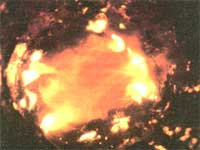

Shelton Energy Research
These photographs were taken of typical chimney sections before and after the cleaning phase /where chemical chimney cleaners were applied) of Series 3 in the testing. Al and A2 were taken before cleaning and are of a typical control and treated pipe section, respectively. BI and 82 are photographs of the same chimneys (Al corresponds to B1, A2 to B2) after the cleaning phase. Heat has caused the creosote in both of the chimneys to dry and swell, and some of the flakes have already fallen to the bottom of the pipes.